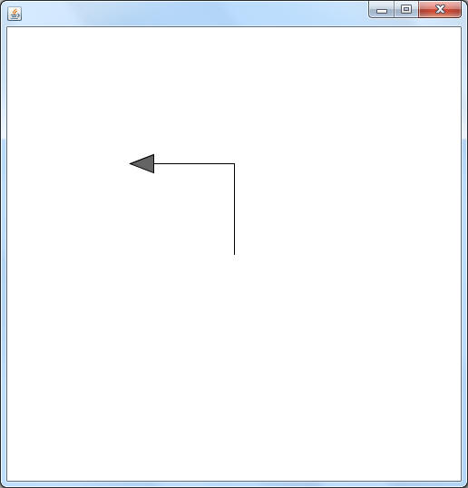
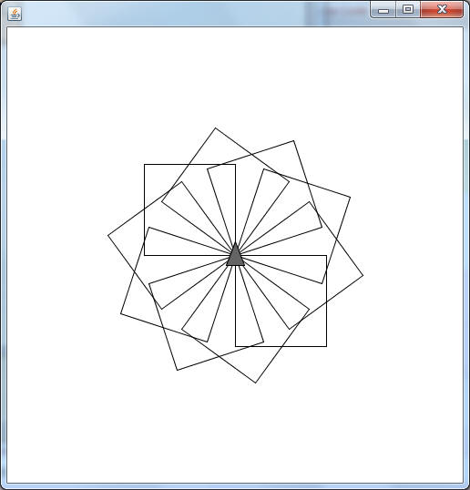
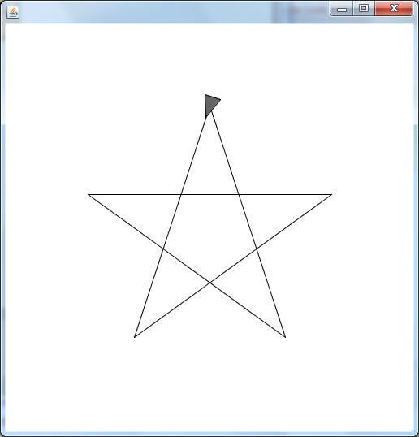
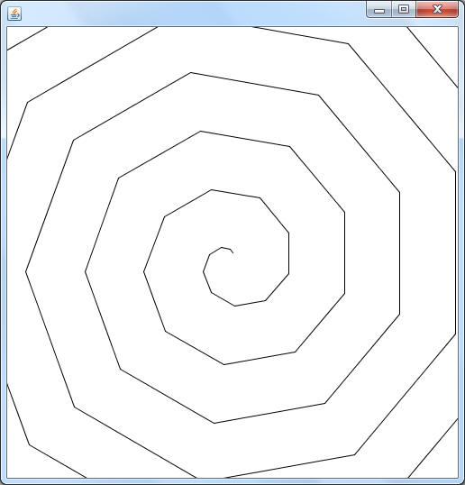

In sacco.jar there is a class named Turtle, which can be used to draw some designs on a window using movement commands. Copy the code below, which constructs a Turtle object and then instructs it to put its pen down (so it will draw when it moves) and then move forward 100 pixels, turn left 90 degrees, and move another 100 pixels.
import sacco.*;
public class TurtleDesigns
{
public static void demo()
{
Turtle t = new Turtle();
t.penDown();
t.move(100);
t.turnLeft(90);
t.move(100);
}
}

We have the beginning of a square here, but copy and paste is old-fashioned. Let's use a loop:
public static void demo()
{
Turtle t = new Turtle();
t.penDown();
for( int i =0; i<4;i++)
{
t.move(100);
t.turnLeft(90);
}
}
Assignment:
Add methods to the TurtleDesigns class that will make the following designs:
1) snowflake: This design is created by drawing ten squares, each time rotating a little bit before drawing the next one.

2) star: You may draw the traditional five pointed star, or a star with more points if you would like. It does not have to be centered, but it's classier if it is.

3) spiral: This is mady by repeatedly rotating and moving. The angle that's rotated is always the same, but the distance moved is increasing steadily.
